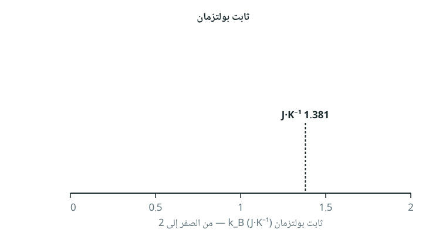

ثابت بولتزمان
Boltzmann constant
ثابت بولتزمان k_B يربط درجة الحرارة بالطاقة الحرارية للجسيم الواحد: E ≈ k_B·T. قيمته تامة بالتعريف بعد 2019 وتساوي 1.380 649×10⁻²³ J/K، وهو ما يجعل الكلفن معرَّفاً بالطاقة لا بخصائص الماء.
قبل 2019 كان الكلفن يُعرَّف بنقطة ثلاثية الماء، وكان k_B كمية مقيسة. وبعد إعادة التعريف صار k_B تاماً بالضبط، وصار الكلفن هو التغير الحراري الذي يقابل تغير طاقة k_B. مثال: عند 300 K تكون الطاقة الحرارية المتوسطة لكل درجة حرية ½k_B·T = 0.5×1.380649×10⁻²³×300 = 2.07×10⁻²¹ J = 0.0129 eV، وهي طاقة صغيرة جداً أمام طاقات الروابط الكيميائية (عدة eV)، ولهذا لا تكسر الحرارة العادية الروابط.
كيف تعمل الظاهرة؟
في أي نظام حراري تتوزع الطاقة على درجات الحرية توزيعاً عشوائياً، ومتوسط الطاقة لكل درجة حرية يساوي ½k_B·T. ولهذا يحدد k_B مقياس الطاقة الذي تقابله درجة حرارة معينة، ويظهر في توزيع ماكسويل-بولتزمان للسرعات وفي معامل بولتزمان exp(−E/k_BT) الذي يحدد احتمال وجود جسيم في حالة طاقة E. وكل الظواهر الحرارية — الانتشار، والتبخر، ومعدلات التفاعل — تعتمد على هذا العامل الأسي.
العلاقة بالأرقام
E_avg = (f/2)·k_B·T لـf درجات حرية، وR = N_A·k_B = 8.3145 J/mol/K. ومعامل بولتزمان exp(−E_a/k_BT). مثال: تفاعل طاقة تنشيطه 50.0 kJ/mol عند 300 K: E_a/k_BT = 50000/(8.3145×300) = 20.05، فيكون exp(−20.05) = 1.96×10⁻⁹. وعند 310 K يصبح الأس 19.40 وexp(−19.40) = 3.74×10⁻⁹، أي أن معدل التفاعل يتضاعف تقريباً لكل 10 K.
مفاهيم متقاربة
يُفرَّق بين k_B وR: الأول لكل جسيم والثاني لكل مول. ويُفرَّق بين k_B·T وطاقة التنشيط: الأولى طاقة حرارية متوسطة والثانية حاجز يجب تجاوزه. ويُفرَّق بين ثابت بولتزمان وثابت بلانك: الأول يربط الحرارة بالطاقة والثاني يربط التردد بالطاقة. وأخيراً يُفرَّق بين k_B وثابت ستيفان-بولتزمان σ = 2π⁵k_B⁴/(15h³c²)، وهو مركّب منه ومن h وc.
حدود التطبيق
k_B·T مقياس صحيح في الأنظمة الكلاسيكية، لكنه لا يصف الأنظمة الكمومية عند درجات حرارة منخفضة حيث تتجمد درجات الحرية. ولا يصف الغازات الكمومية المنحلّة عند درجات قريبة من الصفر المطلق. ولا يُستعمل في حساب الحرارة النوعية للمواد الصلبة عند درجات منخفضة، حيث يلزم نموذج ديباي. وأخيراً لا يصف الأنظمة الصغيرة جداً حيث تتذبذب الحرارة نفسها (تقلبات حرارية).

| الكمية | القيمة | المصدر |
|---|---|---|
| ثابت بولتزمان k_B | 1.380 649×10⁻²³ J·K⁻¹ | [1] |
| ثابت الغاز المولي R | 8.314 462 618 J·mol⁻¹·K⁻¹ | [2] |
المصادر
- 1 CODATA Value: Boltzmann constant — NIST — CODATA 2022 recommended values (2024). physics.nist.gov/cgi-bin/cuu/Value?k · اطُّلع عليه 2026-11-22
- 2 CODATA Value: molar gas constant — NIST — CODATA 2022 recommended values (2024). physics.nist.gov/cgi-bin/cuu/Value?r · اطُّلع عليه 2026-11-22
- 3 CODATA Value: Avogadro constant — NIST — CODATA 2022 recommended values (2024). physics.nist.gov/cgi-bin/cuu/Value?na · اطُّلع عليه 2026-11-22
استشهد بهذا المصطلح
الصيغتان مبنيتان من بيانات الصفحة نفسها: العنوان والتاريخ ورابط النسخة المنشورة.
ثابت بولتزمان — Boltzmann constant. (2026). ديوان المعرفة — انفراد. https://infiradev.com/diwan/terms/term-boltzmann-constant.html
@misc{term-boltzmann-constant2026,
title = {ثابت بولتزمان},
titleaddon = {Boltzmann constant},
howpublished = {{ديوان المعرفة — انفراد} — مرجع علمي عربي},
year = {2026},
url = {https://infiradev.com/diwan/terms/term-boltzmann-constant.html},
urldate = {2026-11-26},
note = {مراجعة علمية: hermes (مراجعة معتمدة 2026-11-26)}
}
راجعه: hermes (مراجعة معتمدة 2026-11-26) · 2026-11-26 · آخر تحديث 2026-11-22